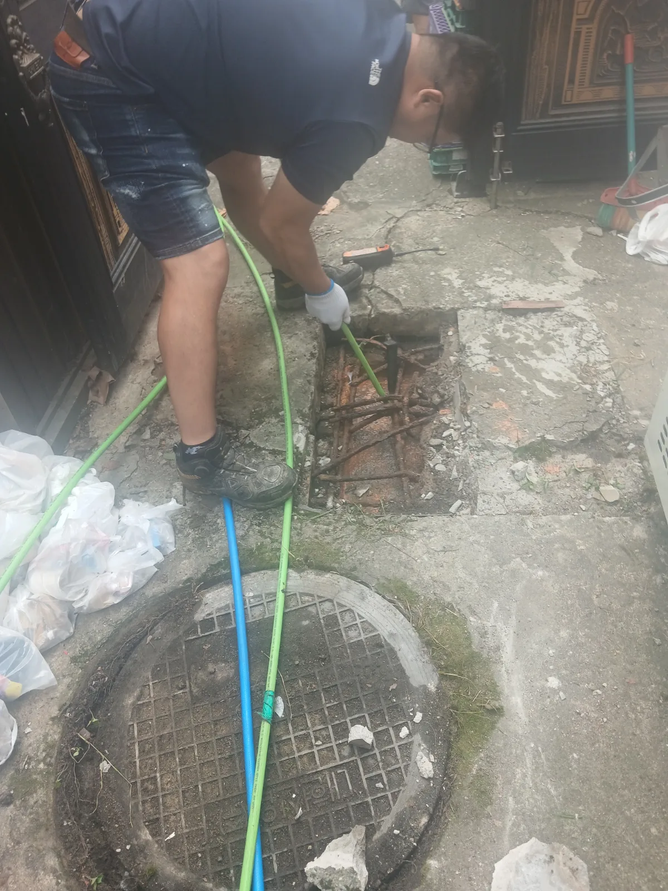

광진구 자양동 하수구막힘, 현장 도착 후 진단
식당 하수구의 물이 원활하게 빠지지 않는다는 긴급 요청을 접수한 뒤 배관고압세척 장비를 준비해 광진구 자양동 현장으로 신속하게 출동했습니다. 영업 중 사용하는 물이 계속 유입되면 하수구역류와 오수 피해로 이어질 수 있어 숙련된 막힘 전문 기술자가 외부 배수 구간부터 빠르게 점검했습니다.
배수구를 개방해 확인하자 내부에는 붉은색을 띠는 단단한 기름때가 가득 쌓여 있었습니다. 일부 기름 덩어리는 배관 밖으로 꺼낸 뒤에도 형태가 그대로 유지될 정도로 두껍고 단단하게 굳어 있었습니다.
마라탕과 훠궈처럼 붉은 고추기름과 유지방을 많이 사용하는 식당에서는 뜨거운 상태로 배출된 기름이 배관 깊은 곳에서 식으면서 굳을 수 있습니다. 굳은 유지방 위로 작은 음식물 찌꺼기가 계속 달라붙으면 배관 통로가 점차 좁아지고 결국 식당 하수구막힘과 역류로 이어집니다.
1단계: 증상 확인과 필요한 장비 작업
먼저 외부 배수구와 배관 입구 주변을 정리해 안전한 작업 공간을 확보했습니다. 배관 입구를 막고 있던 붉은 기름 덩어리를 청소도구로 분리해 외부로 꺼냈습니다.
제거된 이물질은 단순한 음식물 찌꺼기가 아니라 고추기름과 유지방이 반복적으로 식고 굳어 커다란 덩어리를 형성한 상태였습니다. 입구에 보이는 기름 덩어리를 제거하자 기본적인 물길은 나타났지만 배관 깊은 곳과 벽면에도 기름때가 남아 있어 전문적인 배관세척이 필요했습니다.
음식점 하수구막힘은 눈에 보이는 이물질만 꺼내거나 좁은 물길만 관통하면 배관에 남아 있는 유지방 때문에 빠르게 재발할 수 있습니다. 신라건축설비는 겉으로 드러난 막힘만 처리하지 않고 배관 내부의 잔존 기름때와 오염 상태까지 고려해 적합한 공법을 선택합니다.

2단계: 원인 구간 처리와 정상 작동 확인
배관 입구의 붉은 기름 덩어리를 제거한 뒤 전문 고압세척 장비를 가동했습니다. 고압세척 호스를 외부 하수배관 안쪽으로 투입하고 강한 수압을 이용해 배관 벽면에 붙어 있던 고추기름과 음식물 슬러지를 씻어냈습니다.
고압세척 호스를 막힌 구간까지 단계적으로 전진시키며 배관 내부를 집중적으로 세척했습니다. 단순히 좁은 통로만 관통하는 작업이 아니라 배관 안쪽에 남아 있던 유지방을 제거해 안정적인 배수 공간을 확보하는 데 중점을 두었습니다.
고압세척을 마친 뒤 충분한 양의 물을 흘려보내 외부 배수구와 연결 하수배관의 통수 상태를 확인했습니다. 물이 정체되거나 다시 차오르지 않고 원활하게 배출되는 것을 확인한 후 작업을 마무리했습니다.

작업 결과와 재발 방지 안내
광진구 자양동 마라탕 식당의 하수배관을 막고 있던 붉은 유지방 덩어리를 제거하고 배관고압세척까지 진행하면서 정상적인 배수 흐름을 확보했습니다. 눈에 보이는 기름 덩어리를 꺼내는 데 그치지 않고 배관 내부와 벽면에 남은 기름때까지 세척한 것이 이번 식당 하수구막힘 해결의 핵심이었습니다.
마라탕·훠궈처럼 기름 사용량이 많은 식당은 남은 국물과 고추기름을 배수구로 직접 흘려보내지 않도록 관리해야 합니다. 배수구 거름망과 기름받이를 자주 청소하고 외부 배수구의 수위가 높아지거나 배수가 느려졌다면 완전히 막히기 전에 정기적인 배관세척을 진행하는 것이 좋습니다.
신라건축설비는 광진구 자양동을 비롯한 서울 전 지역과 경기권에 신속하게 출동하는 식당 하수구막힘·싱크대막힘·싱크대역류 전문업체입니다. 숙련된 기술자가 배관 구조와 막힘 원인을 정확하게 진단하고 배관 내시경검사, 석션, 관통, 샤프트, 배관스케일링 및 고압세척 중 현장에 적합한 장비와 공법을 선택합니다.
가정의 변기막힘·싱크대막힘·하수구막힘과 같은 작은 생활 배관 문제부터 식당·상가·빌딩의 외부 배수구, 공용배관과 메인 오수관까지 자체적으로 대응합니다. 배관 타공·보수·교체·신설 및 대형 배관공사도 직접 진행할 수 있어 여러 업체를 따로 부르지 않고 진단부터 막힘 제거와 공사까지 한 번에 해결할 수 있습니다.
최종 조치: 외부 배수구를 개방해 막힌 구간을 확인하고 붉게 굳은 유지방 덩어리를 우선 제거했습니다. 이후 고압세척 호스를 하수배관 내부에 투입해 남아 있던 기름때와 음식물 슬러지까지 세척하고, 작업 후 통수 상태를 확인했습니다.
현장 방문 전 확인하는 비용과 작업 범위
신라건축설비는 현장 증상과 배관 구조를 확인한 뒤 필요한 작업과 예상 비용을 안내합니다. 단순 관통으로 해결되는지, 배관내시경·석션·고압세척 또는 추가 장비가 필요한지는 현장 상태에 따라 달라집니다. 출장비와 야간 작업비, 추가 장비 비용이 발생할 수 있는 경우 작업 전에 먼저 설명하고 동의를 받은 범위에서 진행합니다.
업체를 선택할 때 확인할 사항
무조건적인 ‘0원’ 표현보다 실제 작업 범위, 추가 비용 조건, 사용 장비와 사후 대응 기준을 확인하는 것이 중요합니다. 해결되지 않았을 때의 비용 기준과 작업 후 동일 증상 발생 시 점검 범위를 사전에 문의해두면 불필요한 분쟁을 줄일 수 있습니다.
광진구 하수구막힘 자주 묻는 질문
여러 배수구가 동시에 역류하면 공용배관 문제인가요?
식당 주방에서 사용한 물이 외부 하수배관으로 원활하게 배출되지 않는 상태였습니다. 영업 중 계속해서 오수가 발생하는 음식점 특성상 하수구역류와 추가 피해를 막기 위한 신속한 작업이 필요했습니다.처럼 증상이 나타나더라도 원인은 현장마다 다를 수 있습니다. 장비와 배관 구조를 확인한 뒤 필요한 작업 범위를 안내합니다.
고압세척이 항상 필요한가요?
작업 전 증상과 현장 여건을 확인해 예상 범위와 비용을 먼저 안내합니다. 변기 탈거, 장비 추가 투입 또는 공용배관 작업이 필요한 경우 고객 동의 없이 임의로 진행하지 않습니다.
작업 전 추가 비용을 확인할 수 있나요?
완료 후 정상 작동을 함께 확인하고 작업 범위에 따른 사후 안내를 드립니다. 동일 증상이 반복되면 현장 기록을 기준으로 원인을 다시 점검합니다.
하수구막힘 서울·경기 출동지역
신라건축설비는 광진구 자양동 현장을 포함해 서울 25개 구와 경기도 31개 시·군의 배관 문제를 상담합니다. 현장 거리와 기사 배정 상황에 따라 출동 가능 여부를 먼저 안내드립니다.
서울 전 지역
강남구 · 강동구 · 강북구 · 강서구 · 관악구 · 광진구 · 구로구 · 금천구 · 노원구 · 도봉구 · 동대문구 · 동작구 · 마포구 · 서대문구 · 서초구 · 성동구 · 성북구 · 송파구 · 양천구 · 영등포구 · 용산구 · 은평구 · 종로구 · 중구 · 중랑구
경기도 주요 출동지역
수원시 · 용인시 · 고양시 · 화성시 · 성남시 · 부천시 · 남양주시 · 안산시 · 평택시 · 안양시 · 시흥시 · 파주시 · 김포시 · 의정부시 · 광주시 · 하남시 · 광명시 · 군포시 · 양주시 · 오산시 · 이천시 · 안성시 · 구리시 · 의왕시 · 포천시 · 양평군 · 여주시 · 동두천시 · 과천시 · 가평군 · 연천군